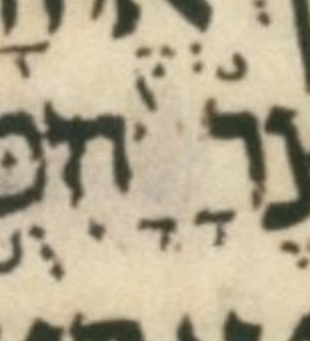

| bcv (link to tanach.us) | 2k19:37 |
| MPK | ◌ָ◌ָ◌◌֙ |
| qere | בָּנָיו֙ |
| at issue | בּ |
| at issue English | added a dagesh to bet |
| folio col line | 216B 1 14 |
The MPK has no letter to carry a dagesh for the qere’s ב. The MPK (points on no letters) is two qamats marks and pashta.
There is also a dot near the pashta, which we ignore. I.e. we assume it is not ink, or in any case not intentional.